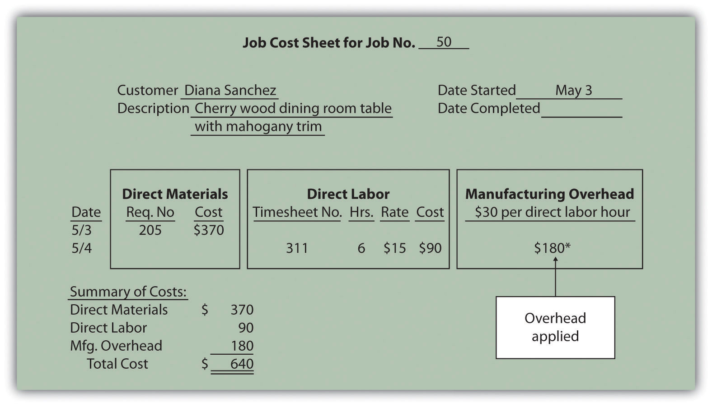
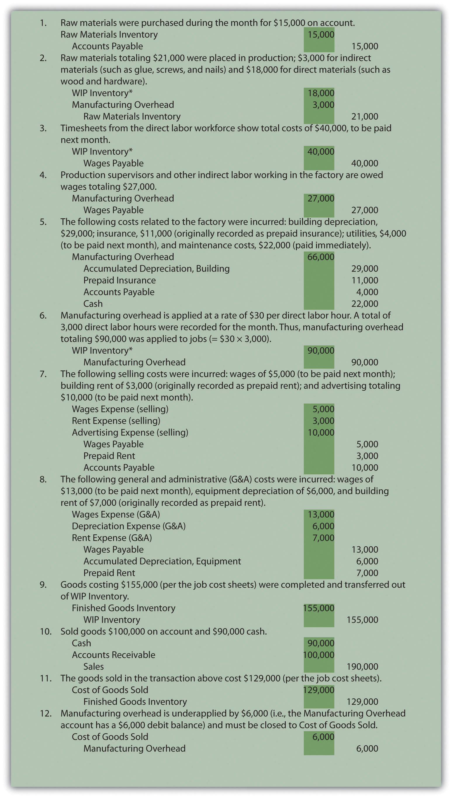
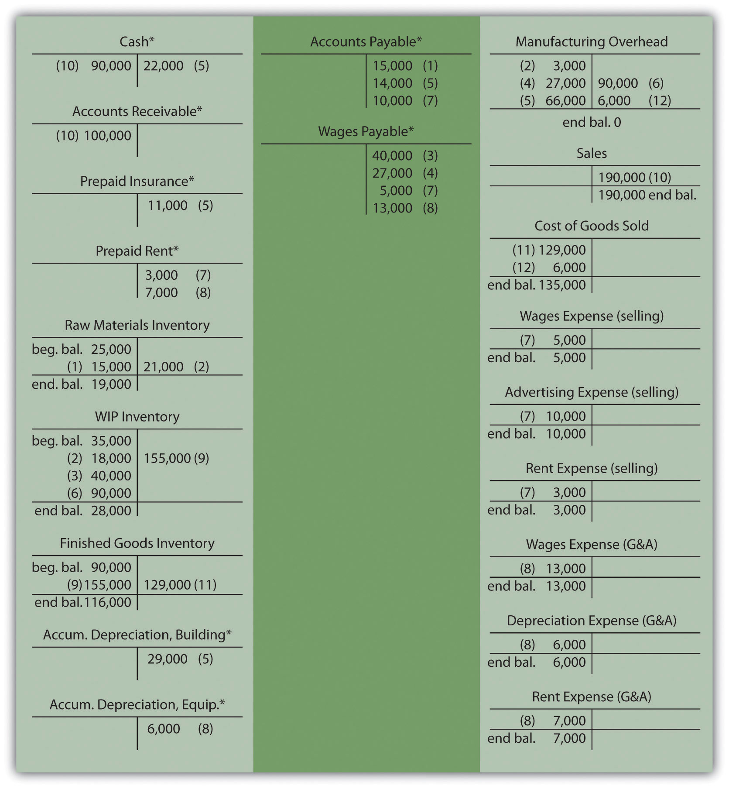
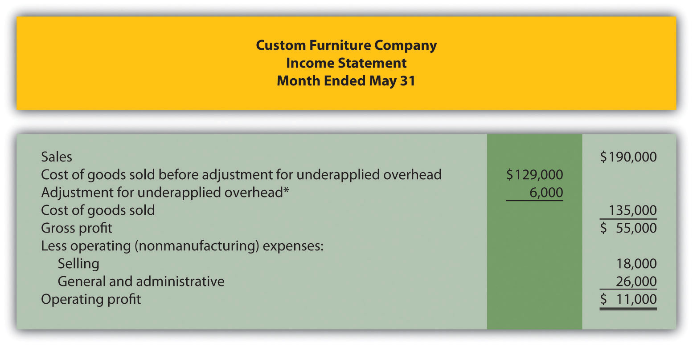

Dan Stevens recently started Custom Furniture Company, a manufacturing company that specializes in building custom wood tables for individuals and organizations. Each table is unique and built to customer specifications for use in homes (coffee tables and dining room tables) and offices (boardroom and meeting room tables). The sales price of each table varies significantly, from $1,000 to more than $30,000. (Note that this is the same company as the example in the last part of Chapter 1 "What Is Managerial Accounting?". Although not required, you may find it helpful to refer to the Chapter 1 "What Is Managerial Accounting?" discussion of Custom Furniture Company.)
When Dan received the company’s income statement for May, he was surprised by the lack of profits. Because sales prices are based on a markup of estimated costs, Dan is questioning the accuracy of his estimates. He approaches Leslie, the full-time accountant for Custom Furniture Company, to get more information.
| Dan: | Leslie, last month’s income statement shows we are struggling to make a decent profit. I’m not sure why this is happening, especially since we price our furniture 70 percent above estimated production costs. |
| Leslie: | Basing prices on estimated costs is a good approach, but it only works if your estimates are accurate. Have you compared the actual cost of each table with your original estimates? |
| Dan: | No, but I like the idea. Where do I start? |
| Leslie: | We use a job cost accounting system that tracks costs for each table you produce. I can pull together the information for you. How far back do you want to go? |
| Dan: | Let’s start by looking at actual product costs for the three costliest tables produced in May. It would be helpful to break these costs out for direct materials, direct labor, and manufacturing overhead. I would also like to see the gross profit generated by each table. |
| Leslie: | No problem, I’ll have the information for you by the end of the day. |
We use Custom Furniture Company as an example throughout the chapter to explain how a job costing system works and to provide information that will address Dan’s concerns.
Question: Financial accounting classes cover how merchandising companies, such as Sears and Lowe’s, account for the cost of the goods that they purchase from a supplier and later sell to a customer. These companies simply record the cost of the purchase in an inventory account and account for any returns and allowances, discounts, and shipping costs. Once the merchandise is sold, the related inventory costs are transferred to cost of goods sold. However, manufacturing companies are different. How do manufacturing companies account for inventory at different stages of production?
Answer: Manufacturing companies like Custom Furniture Company, Ford, and IBM don’t have it quite as easy as merchandising companies. They must account for the materials, labor, and other manufacturing costs that go into building the product. The process of accounting for manufacturing costs depends on which costing system a company uses—job costing or process costing.
Question: We define a jobAn activity that results in a unique product, one easily distinguished from other products. as an activity that produces a unique product—one that can be easily distinguished from other products. For example, building a custom home is a job because the home is unique and easy to distinguish from other homes. An accounting firm’s provision of tax services to a client is another example of a job. How does a job costing system help companies that produce unique products or jobs?
Answer: A job costing systemA system that records revenues and costs for each job. records revenues and costs for each job. Because each job at Custom Furniture Company results in a unique product and has different material and labor requirements, the company uses a job costing system.
Tracking revenues and costs for each job is important for several reasons:
Question: Job costing may work for builders of custom furniture and tax professionals, but does job costing make sense for a company that produces soft drinks? Imagine trying to track costs for each can of soda produced. A job costing system would not be appropriate for this type of company. A different costing system, called process costing, would be a better fit. Which types of companies use this type of system?
Answer: Companies that produce identical units of product in batches using a consistent process track costs with a process costing systemA costing system used by companies that produce identical units of product in batches employing a consistent process.. Table 2.1 "Job Costing Versus Process Costing" lists some products and services that require the use of process costing versus job costing, and Figure 2.1 "Examples of Job Costing and Process Costing" shows an example of each. This chapter focuses on job costing. We explore process costing further in Chapter 4 "How Is Process Costing Used to Track Production Costs?".
Table 2.1 Job Costing Versus Process Costing
| Job Costing | Process Costing |
|---|---|
| Custom homes | Oil |
| Custom vans | Chemicals |
| House painting services | Paint |
| Movies | Lumber |
| Airplanes | Milk |
| Bridges | Pencils |
| Legal services | Paper |
Identify whether each company listed in the following would use job costing or process costing.
Solutions to Review Problem 2.1
Question: Now that we know a job costing system records revenues and costs for each unique job, we can determine whether this type of system would be appropriate at Custom Furniture Company. Recall that Custom Furniture produces high-quality custom wood tables that are sold for between $1,000 and $30,000. A job costing system is a perfect fit for this type of company. How would Custom Furniture Company use a job costing system to track production costs?
Answer: We use financial information for the month of May at Custom Furniture Company to illustrate how a job costing system works. Refer to Chapter 1 "What Is Managerial Accounting?", as needed, for a refresher on manufacturing cost terms and how the three different inventory accounts are used by manufacturing companies. Let’s start our example with the purchase of raw materials.
Question: Recall from Chapter 1 "What Is Managerial Accounting?" that raw materials are the items necessary to build a product. For Custom Furniture Company, this includes items such as wood, brackets, screws, nails, glue, lacquer, and sandpaper. How do we record the purchase of raw materials?
Answer: The accountants at Custom Furniture record the cost of raw materials purchased in the raw materials inventory account. Assume Custom Furniture Company purchased $4,500 in raw materials on May 2. All purchases are on account. The journal entry to reflect this transaction is as follows:

This purchase of raw materials is further illustrated in the T-accounts shown in the following. Assume the beginning balance for raw material inventory is $25,000. Beginning balances are only provided for inventory accounts since the focus of this chapter is on manufacturing costs that flow through these accounts.

Introductory financial accounting texts discuss the rules for double-entry accounting in detail. Recall that the following account categories are increased with a debit (and are therefore decreased with a credit): assets, dividends, and expenses. Conversely, the following account categories are increased with a credit (and decreased with a debit): liabilities, stockholders’ equity, and revenues. Also note that the individual transactions shown throughout this chapter represent one example of many similar transactions that occurred throughout the month of May. A summary of activity for the entire month of May is presented in Figure 2.7 "Custom Furniture Company’s Journal Entries for May" and Figure 2.8 "Custom Furniture Company’s T-Accounts".
Question: The next step is to move raw materials from the storeroom to production. How does the company track this information, and how is this transaction recorded in the general journal?
Answer: A materials requisition formA form used to track materials taken out of raw materials inventory and placed into production. tracks materials taken out of raw materials inventory and placed in production. This form specifies the type, quantity, and cost of materials being requested, as well as the number of the job in which the materials will be used. Figure 2.2 "Materials Requisition Form for Custom Furniture Company" shows a materials requisition form that Custom Furniture Company used to transfer $370 in direct materials out of raw materials inventory into production.
Figure 2.2 Materials Requisition Form for Custom Furniture Company

The journal entry to reflect this transfer is as follows:

This flow of direct materials from one account to another is further illustrated in the T-accounts that follow. Assume the beginning balance for work-in-process inventory is $35,000.

Question: The next step is to post the information shown on the materials requisition form to the appropriate job cost sheet. Because the work-in-process (WIP) inventory account tracks manufacturing costs in total, a separate subsidiary ledger is necessary to track manufacturing costs for each job. The total of all WIP inventory subsidiary ledgers matches the WIP inventory account shown on the balance sheet. What does a WIP inventory subsidiary ledger look like, and how is it used?
Answer: The WIP inventory subsidiary ledger typically comprises many individual job cost sheets. A job cost sheetA means of accumulating the manufacturing costs incurred for each job. simply accumulates manufacturing costs incurred for each job. Figure 2.3 "Job Cost Sheet for Custom Furniture Company" shows a job cost sheet for Custom Furniture Company. Notice how the materials requisition in Figure 2.2 "Materials Requisition Form for Custom Furniture Company" is a line item in the job cost sheet for job 50.
Figure 2.3 Job Cost Sheet for Custom Furniture Company

*$370 comes from the total in Figure 2.2 "Materials Requisition Form for Custom Furniture Company".
Question: Recall from Chapter 1 "What Is Managerial Accounting?" that direct labor is defined as workers who convert materials into a finished product and whose time is easily traced to the product or job. Manufacturing companies, such as Custom Furniture Company, must keep track of the hours each worker spends on any given job. How do companies track this information, and how is this information recorded in the general journal?
Answer: Workers use a timesheetA document that workers use to track the hours spent on each job. to track the hours spent on each job. The timesheet is often called a time card, time ticket, or job ticket. The worker is responsible for completing the timesheet, including the date, job number, and hours worked on each job.
Figure 2.4 "Timesheet for Custom Furniture Company" provides an example of a timesheet used at Custom Furniture Company to track direct labor costs of $120 related to jobs 50 and 51 for Tim Wallace. The journal entry to reflect this is as follows:

Recording these direct labor costs is further illustrated in the T-accounts that follow. Again, beginning balances are only provided for inventory accounts since the focus of this chapter is on manufacturing costs that flow through these accounts.

Figure 2.4 Timesheet for Custom Furniture Company

The next step is to post the information shown on the timesheet to the appropriate job cost sheet, just as we did with direct materials. This is done for job 50 in Figure 2.5 "Direct Labor Costs for Custom Furniture Company’s Job 50".
Figure 2.5 Direct Labor Costs for Custom Furniture Company’s Job 50

*Direct labor information carried over from Figure 2.4 "Timesheet for Custom Furniture Company".
Provide the journal entry to record each of the following transactions:
Solutions to Review Problem 2.2


Question: We have discussed how to assign direct material and direct labor costs to jobs using a materials requisition form, timesheet, and job cost sheet. The third manufacturing cost—manufacturing overhead—requires a little more work. How do companies assign manufacturing overhead costs, such as factory rent and factory utilities, to individual jobs?
Answer: Recall from Chapter 1 "What Is Managerial Accounting?" that manufacturing overhead consists of all costs related to the production process other than direct materials and direct labor. Because manufacturing overhead costs are difficult to trace to specific jobs, the amount allocated to each job is based on an estimate. The process of creating this estimate requires the calculation of a predetermined rate.
The goal is to allocate manufacturing overhead costs to jobs based on some common activity, such as direct labor hours, machine hours, or direct labor costs. The activity used to allocate manufacturing overhead costs to jobs is called an allocation baseThe activity used to allocate manufacturing overhead costs to jobs.. Once the allocation base is selected, a predetermined overhead rate can be established. The predetermined overhead rateA rate established prior to the year in which it is used in allocating manufacturing overhead costs to jobs. is calculated prior to the year in which it is used in allocating manufacturing overhead costs to jobs.
Question: How is the predetermined overhead rate calculated?
Answer: We calculate the predetermined overhead rate as follows, using estimates for the coming year:
*The numerator requires an estimate of all overhead costs for the year, such as indirect materials, indirect labor, and other indirect costs associated with the factory. Custom Furniture Company estimates annual overhead costs to be $1,140,000 based on actual overhead costs last year.
**The denominator requires an estimate of activity in the allocation base for the year. Custom Furniture uses direct labor hours as the allocation base and expects its direct labor workforce to record 38,000 direct labor hours for the year.
The predetermined overhead rate calculation for Custom Furniture is as follows:
Thus each job will be assigned $30 in overhead costs for every direct labor hour charged to the job. The assignment of overhead costs to jobs based on a predetermined overhead rate is called overhead appliedThe assignment of overhead costs to jobs based on a predetermined overhead rate.. Remember that overhead applied does not represent actual overhead costs incurred by the job—nor does it represent direct labor or direct material costs. Instead, overhead applied represents a portion of estimated overhead costs that is assigned to a particular job.
Question: Now that we know how to calculate the predetermined overhead rate, the next step is to use this rate to apply overhead to jobs. How do companies use the predetermined overhead rate to apply overhead to jobs, and how is this information recorded in the general journal?
Answer: As shown on the timesheet in Figure 2.4 "Timesheet for Custom Furniture Company", Tim Wallace charged six hours to job 50. Because manufacturing overhead is applied at a rate of $30 per direct labor hour, $180 (= $30 × 6 hours) in overhead is applied to job 50. The journal entry to reflect this is as follows:
Recording the application of overhead costs to a job is further illustrated in the T-accounts that follow.
When this journal entry is recorded, we also record overhead applied on the appropriate job cost sheet, just as we did with direct materials and direct labor. Figure 2.6 "Overhead Applied for Custom Furniture Company’s Job 50" shows the manufacturing overhead applied based on the six hours worked by Tim Wallace. Notice that total manufacturing costs as of May 4 for job 50 are summarized at the bottom of the job cost sheet.
Figure 2.6 Overhead Applied for Custom Furniture Company’s Job 50
*$180 = $30 per direct labor hour × 6 direct labor hours.
Question: Although we used direct labor hours as the allocation base for Custom Furniture Company’s predetermined overhead rate, organizations use various other types of allocation bases. The most common allocation bases are direct labor hours, direct labor costs, and machine hours. What factors do companies consider when deciding on an allocation base?
Answer: Companies typically look at the following two items when determining which allocation base to use:
Link to overhead costs. The goal is to find an allocation base that drives overhead costs, often called a cost driverThe allocation base that drives overhead costs.. For example, if a company’s production process is labor intensive (i.e., it requires a large labor force), overhead costs are likely driven by direct labor hours or direct labor costs. The more direct labor hours worked, the higher the overhead costs incurred. Thus direct labor hours or direct labor costs would be used as the allocation base.
If a company’s production process is highly mechanized (i.e., it relies on machinery more than on labor), overhead costs are likely driven by machine hours. The more machine hours used, the higher the overhead costs incurred. Thus machine hours would be used as the allocation base.
It may make more sense to use several allocation bases and several overhead rates to allocate overhead to jobs. This approach, called activity-based costing, is discussed in depth in Chapter 3 "How Does an Organization Use Activity-Based Costing to Allocate Overhead Costs?".
Question: The use of a predetermined overhead rate rather than actual data to apply overhead to jobs is called normal costingA method of costing that uses a predetermined overhead rate to apply overhead to jobs.. Most companies prefer normal costing over assigning actual overhead costs to jobs. Why do most companies prefer to use normal costing?
Answer: Companies use normal costing for several reasons:
Question: Using a predetermined overhead rate to apply overhead costs to jobs requires the use of a manufacturing overhead account. How is the manufacturing overhead account used to record transactions?
Answer: The manufacturing overhead account tracks the following two pieces of information:
First, the manufacturing overhead account tracks actual overhead costs incurred. Recall that manufacturing overhead costs include all production costs other than direct labor and direct materials. The actual manufacturing overhead costs incurred in a period are recorded as debits in the manufacturing overhead account. For example, assume Custom Furniture Company places $4,200 in indirect materials into production on May 10. The journal entry to reflect this is as follows:
Other examples of actual manufacturing overhead costs include factory utilities, machine maintenance, and factory supervisor salaries. All these costs are recorded as debits in the manufacturing overhead account when incurred.
Second, the manufacturing overhead account tracks overhead costs applied to jobs. The overhead costs applied to jobs using a predetermined overhead rate are recorded as credits in the manufacturing overhead account. You saw an example of this earlier when $180 in overhead was applied to job 50 for Custom Furniture Company. We repeat the entry here.
The following T-account summarizes how overhead costs flow through the manufacturing overhead account:
The manufacturing overhead account is classified as a clearing accountAn account used to hold financial data temporarily until it is closed out at the end of the period.. A clearing account is used to hold financial data temporarily and is closed out at the end of the period before preparing financial statements.
Question: Because manufacturing overhead costs are applied to jobs based on an estimated predetermined overhead rate, overhead applied (credit side of manufacturing overhead) rarely equals actual overhead costs incurred (debit side of manufacturing overhead). What terms are used to describe the difference between actual overhead costs incurred during a period and overhead applied during a period?
Answer: Two terms are used to describe this difference—underapplied overhead and overapplied overhead.
Underapplied overheadOverhead costs applied to jobs that are less than actual overhead costs. occurs when actual overhead costs (debits) are higher than overhead applied to jobs (credits). The T-account that follows provides an example of underapplied overhead. Note that the manufacturing overhead account has a debit balance when overhead is underapplied because fewer costs were applied to jobs than were actually incurred.
Overapplied overheadOverhead costs applied to jobs that exceed actual overhead costs. occurs when actual overhead costs (debits) are lower than overhead applied to jobs (credits). The T-account that follows provides an example of overapplied overhead. Note that the manufacturing overhead account has a credit balance when overhead is overapplied because more costs were applied to jobs than were actually incurred.
Source: Photo courtesy of prayitno, http://www.flickr.com/photos/34128007@N04/5293183651/.
Job Costing at Boeing
Boeing Company is the world’s leading aerospace company and the largest manufacturer of commercial jetliners and military aircraft combined. Boeing provides products and services to customers in 150 countries and employs 165,000 people throughout the world.
Since most of Boeing’s products are unique and costly, the company likely uses job costing to track costs associated with each product it manufactures. For example, the costly direct materials that go into each jetliner produced are tracked using a job cost sheet. Direct labor and manufacturing overhead costs (think huge production facilities!) are also assigned to each jetliner. This careful tracking of production costs for each jetliner provides management with important cost information that is used to assess production efficiency and profitability. Management can answer questions, such as “How much did direct materials cost?,” “How much overhead was allocated to each jetliner?,” or “What was the total production cost for each jetliner?” This is important information when it comes time to negotiate the sales price of a jetliner with a potential buyer like United Airlines or Southwest Airlines.
Source: Boeing, “Home Page,” http://www.boeing.com.
Question: Since the manufacturing overhead account is a clearing account, it must be closed at the end of the period. How do we close the manufacturing overhead account?
Answer: Most companies simply close the manufacturing overhead account balance to the cost of goods sold account. For example, if there is a $2,000 debit balance in manufacturing overhead at the end of the period, the journal entry to close the underapplied overhead is as follows:
If manufacturing overhead has a $3,000 credit balance at the end of the period, the journal entry to close the overapplied overhead is as follows:
Question: Although most companies close the manufacturing overhead account to cost of goods sold, this is typically only done when the amount is immaterial (immaterial is a common accounting term used to describe an amount that is small relative to a company’s size). The term material describes a relatively large amount. How do we close the manufacturing overhead account when the amount is material?
Answer: If the amount is material, it should be closed to three different accounts—work-in-process (WIP) inventory, finished goods inventory, and cost of goods sold—in proportion to the account balances in these accounts.
For example, suppose a company has $2,000 in underapplied overhead (debit balance in manufacturing overhead) and that the three account balances are as follows:
The $2,000 is closed to each of the three accounts based on their respective percentages. Thus $1,200 is apportioned to WIP inventory (= $2,000 × 60 percent), $600 goes to finished goods inventory (= $2,000 × 30 percent), and $200 goes to cost of goods sold (= $2,000 × 10 percent). The journal entry to close the $2,000 underapplied overhead debit balance in manufacturing overhead is as follows:
Although this approach is not as common as simply closing the manufacturing overhead account balance to cost of goods sold, companies do this when the amount is relatively significant.
Most companies use a normal costing system to track product costs. Normal costing tracks actual direct material costs and actual direct labor costs for each job and charges manufacturing overhead to jobs using a predetermined overhead rate. The predetermined overhead rate is calculated as follows:
Assume Chan Company incurs actual manufacturing overhead costs of $470,000 and applies overhead of $510,000 for the year. Account balances are as follows: WIP inventory, $25,000; finished goods inventory, $25,000; and cost of goods sold, $50,000.
Solutions to Review Problem 2.3
The predetermined overhead rate is calculated as follows:
If Chan’s production process is highly mechanized, overhead costs are likely driven by machine use. The more machine hours used, the higher the overhead costs incurred. Thus there is a link between machine hours and overhead costs, and using machine hours as an allocation base is preferable.
Machine hours are also easily tracked, making implementation relatively simple.
A total of $10,000 (= $5 per machine hour rate × 2,000 machine hours) will be applied to job 153 and recorded in the journal as follows:
This amount will also be recorded on the job cost sheet for Job 153.
*Amounts are calculated as follows. Allocation amount = percent of total × the overapplied balance of $40,000.

Question: Although this chapter has focused on job costing in a manufacturing setting, many service organizations use job costing as well. Electricians, accountants, and auto mechanics are examples of service providers that use job costing. Electricians track costs by project (e.g., a new building or a kitchen remodel), accountants track costs by client (e.g., an individual or a corporation), and auto mechanics track costs by job (e.g., replacing a drive belt on a company truck). How does job costing work in a service company setting?
Answer: Job costing in service organizations is the same as in manufacturing organizations, except that service organizations tend to use fewer materials. There are also minor differences in the accounts that these types of organizations use, as shown in Table 2.2 "Accounts Used in Service Organizations and Manufacturing Organizations".
Table 2.2 Accounts Used in Service Organizations and Manufacturing Organizations
| Manufacturing Organization Account Name | Service Organization Account Name | Financial Statement |
|---|---|---|
| Raw materials inventory | Parts inventory or supplies | Balance sheet (asset) |
| Work-in-process inventory | Work in process* | Balance sheet (asset) |
| Finished goods | (Not applicable) | Balance sheet (asset) |
| Cost of goods sold | Cost of services (or other expense accounts) | Income statement (expense) |
| Manufacturing overhead | Overhead (or service overhead) | None (clearing account) |
| *Some service companies do not use a work-in-process account but instead simply charge costs directly to expense accounts. | ||
Service organizations use a job cost sheet like the one discussed earlier to track direct materials, direct labor, and overhead.
Question: How do service organizations track direct materials using job costing?
Answer: Many service organizations do not track direct materials for each job because the cost of the materials is negligible. For example, accountants and attorneys use low-cost materials, such as binders and paper. These materials, often called supplies, are included in overhead rather than tracked by job.
Some service organizations track direct materials for each job because the cost of the materials is significant. Consider auto mechanics, who track the parts needed to perform repairs for each job, or electricians, who track the materials needed to wire a new building. Materials may be requisitioned from parts inventory or supplies, similar to raw materials inventory in a manufacturing setting, or may be purchased directly from a supplier, depending on the nature of the business. The process of recording this information in the journal and job cost sheet is exactly the same as for a manufacturing company (refer back to Figure 2.3 "Job Cost Sheet for Custom Furniture Company" for an example).
Question: How do service organizations track direct labor using job costing?
Answer: Direct labor tends to be the most significant cost for service organizations. The process of tracking labor using a timesheet and recording labor costs in the journal and job cost sheet is exactly the same as for a manufacturing company (refer back to Figure 2.4 "Timesheet for Custom Furniture Company" and Figure 2.5 "Direct Labor Costs for Custom Furniture Company’s Job 50" for examples).
Question: Like manufacturing companies, service organizations often use a predetermined overhead rate to apply overhead. What allocation bases are most commonly used by service organizations to apply overhead costs to jobs?
Answer: Because overhead is typically driven by direct labor hours in a service organization, direct labor hours or direct labor cost is the most common allocation base. Again, the process of recording this information in the journal and job cost sheet is exactly the same as for a manufacturing company (refer back to Figure 2.6 "Overhead Applied for Custom Furniture Company’s Job 50" for an example).
Job Costing at Movie Studios
Studios that produce costly movies, such as 20th Century Fox, Universal Studios, and Warner Brothers, incur a variety of costs that are tracked using a job costing system. For example, the production of a Harry Potter movie requires direct labor in the form of actors, directors, editors, and the film crew. The direct materials category includes costumes, extensive sets, and props. Overhead costs include items such as depreciation of film production equipment, utilities in the editing studio, and executive salaries for those overseeing the production of several films concurrently.
Determining the production costs of movies and related profitability is important for this industry since actors, directors, and others involved in the film are often compensated based on a percentage of profits. Disagreements sometimes arise between studios and actors regarding the accuracy of costs for movies, particularly in the area of overhead. Some studios have been accused of allocating too much overhead to individual films to drive down the reported profitability of each film, thereby reducing the amount owed to those receiving a portion of the profits.
Describe the similarities and differences in how service companies and manufacturing companies account for direct materials, direct labor, and overhead.
Solutions to Review Problem 2.4
The similarities and differences in how service companies and manufacturing companies account for direct materials, direct labor, and overhead are as follows:
Question: The goal of this section is to pull it all together for Custom Furniture Company. We begin by looking at revenue and cost information for May, including manufacturing and nonmanufacturing costs. Why is it important for companies like Custom Furniture Company to correctly classify and record costs such as direct materials (e.g., wood used for each table), salaries of administrative personnel, and rent on the factory?
Answer: Companies must be able to evaluate the profitability of each job and on a broader scale, evaluate the overall profitability of the company. This requires that all manufacturing and nonmanufacturing costs be classified and recorded correctly in the general journal. The following information shows how to accomplish this with transactions for the month of May at Custom Furniture Company.
Question: How are the typical transactions for a manufacturing company recorded in the general journal?
Answer: Figure 2.7 "Custom Furniture Company’s Journal Entries for May" shows Custom Furniture Company’s journal entries for May. Figure 2.8 "Custom Furniture Company’s T-Accounts" presents the same information in T-account format. (Note that each entry shows the total dollar amount for the month rather than individual transaction amounts.) If you understand how to make an entry summarized in total, you know how to make each individual (perhaps daily) entry. Beginning balances for raw materials inventory ($25,000), work-in-process inventory ($35,000), and finished goods inventory ($90,000) are shown in the T-accounts in Figure 2.8 "Custom Furniture Company’s T-Accounts". Although it is not necessary to refer back to Chapter 1 "What Is Managerial Accounting?" at this point, we should note that the beginning balance and transaction amounts used here for these three inventory accounts tie back to the three schedules presented in Chapter 1 "What Is Managerial Accounting?" (schedule of raw materials placed in production, schedule of cost of goods manufactured, and schedule of cost of goods sold).
Figure 2.7 Custom Furniture Company’s Journal Entries for May
*All debit amounts to work-in-process inventory are also recorded on the appropriate job cost sheets.
Figure 2.8 Custom Furniture Company’s T-Accounts
*Beginning and ending balances are only provided for inventory accounts since the focus of this chapter is on manufacturing costs that flow through the inventory accounts.
Question: Now that the information for the month of May has been recorded for Custom Furniture Company, we need to summarize this information to evaluate the profitability of the company and the profitability of jobs. How profitable was Custom Furniture for the month of May?
Answer: Custom Furniture Company’s income statement for the month of May, shown in Figure 2.9 "Custom Furniture Company’s Income Statement", indicates the company had operating profit of $11,000. This information comes directly from the T-accounts shown in Figure 2.8 "Custom Furniture Company’s T-Accounts".
Figure 2.9 Custom Furniture Company’s Income Statement
*See entry 12 in Figure 2.7 "Custom Furniture Company’s Journal Entries for May" and Figure 2.8 "Custom Furniture Company’s T-Accounts" for this adjustment. This represents the amount of overhead underapplied to jobs and closed out to cost of goods sold at the end of May. An alternative presentation is to simply show the cost of goods sold amount of $135,000 directly under sales.
Recall from the beginning of the chapter that Dan Stevens, the owner of Custom Furniture Company, is concerned about the company’s profitability. Although Dan prices his furniture at 70 percent above estimated production costs, the company had only $11,000 in profits for the month of May, as shown in Figure 2.9 "Custom Furniture Company’s Income Statement". Dan asked Leslie (the accountant) to look into the accuracy of his estimates by reviewing actual production costs for the three costliest tables produced in May. As you read Leslie’s comments, be sure to look at the income statement in Figure 2.9 "Custom Furniture Company’s Income Statement" and the job cost estimates and actual results in Figure 2.10 "Job Cost Estimates Versus Actual Results for Custom Furniture Company".
Figure 2.10 Job Cost Estimates Versus Actual Results for Custom Furniture Company

a Product costs are from the job cost sheet, and the sales price is based on the original bid.
b Based on 70 percent markup of estimated total production costs. For example, job 40’s sales price of $18,360 = $10,800 × 170 percent.
c Equals gross profit divided by total production costs. Company target is 70 percent.
d Rounded.
| Leslie: | Dan, I have the production cost information you requested. |
| Dan: | Great! What did you find out? |
| Leslie: | Well, first I looked at the income statement for May. If you establish prices based on a 70 percent markup of production costs, then sales revenue should be 170 percent of cost of goods sold, and the resulting gross profit should be 70 percent of cost of goods sold. |
| Dan: | Sounds reasonable. Are we anywhere near these numbers? |
| Leslie: | Not really. Cost of goods sold for May total $135,000, so sales should be closer to $229,500 (that would be $135,000 times 170 percent), and gross profit should be closer to $94,500, which is $135,000 times 70 percent. As you can see on the income statement, we didn’t get very close to these numbers. |
| Dan: | Do you have any idea why? |
| Leslie: | I pulled together production cost information from our job costing system for the three highest-cost tables produced in May as you requested. |
| Dan: | And? |
| Leslie: | I compared the job cost sheet information for each item with your original estimates, and here’s what I found. It looks as if the problem is with direct materials. All three jobs show that direct material costs were significantly higher than you estimated. Direct labor and manufacturing overhead costs were pretty close. |
| Dan: | Wow, I’m surprised that direct material costs were so high. I’ll have to check into this further. I do recall wood costs increasing over the last couple of months, but not to this extent. |
| Leslie: | There are lots of potential causes for the increase in direct materials. Perhaps materials were wasted as a result of machine problems or because of inexperienced employees. |
| Dan: | Let’s try to nail down why my estimates are so far off so I can do a better job of estimating costs in the future. |
| Leslie: | Good idea—I’ll look into the direct materials costs and get back to you later this week. |
Question: Figure 2.10 "Job Cost Estimates Versus Actual Results for Custom Furniture Company" provides an in depth view of the costs associated with each job and the resulting profitability. How does this information help Custom Furniture Company plan for the future?
Answer: This information helps managers assess the profitability of individual jobs. Custom Furniture Company was able to identify areas of concern by comparing information from job cost sheets with Dan’s estimates. Dan and Leslie will have to do more research to find the cause of the high material costs. If changes cannot be made to the production process to reduce these costs, Dan may have to consider revising his estimates and raising prices on future jobs. The goal is to provide enough information for the company to make informed decisions about areas of concern, such as direct materials costs, and how much to charge for future jobs.
Farm Equipment, Inc., produces tractors and other farm machinery. Each piece of equipment is built to customer specifications. During May, its first month of operations, Farm Equipment, Inc., began working on three customer orders: jobs 1, 2, and 3. The following transactions occurred during May:
Processed material requisitions for the following items:
Processed timesheets showing the following:
Required:
Solutions to Review Problem 2.5
*$161,200 comes from the total for direct materials in part a.

*$33,100 comes from the total for direct labor in part a.
*$52,960 comes from the total for manufacturing overhead in part a.
Questions
Brief Exercises
Job Costing Versus Process Costing. Indicate whether each of the firms listed in the following would use job costing or process costing.
Job Costing Versus Process Costing. Indicate whether each of the firms listed in the following would use job costing or process costing.
Recording Purchase and Transfer of Raw Materials in T-Accounts. The following transactions occurred during the month of October:
| October 5 | Raw materials totaling $15,000 were purchased on account. |
| October 8 | Direct materials totaling $6,000 were placed in production. |
| October 10 | Indirect materials totaling $1,000 were placed in production. |
Required:
Service Organization Accounts. Provide the account name commonly used by service companies for each of the following accounts used in a manufacturing environment.
Exercises: Set A
Raw Materials Inventory Journal Entries. The balance in Sedona Company’s raw materials inventory account was $110,000 at the beginning of September. Raw materials purchased during the month totaled $50,000. Sedona used $17,000 in direct materials and $8,000 in indirect materials for the month.
Required:
Prepare separate journal entries to record the following items:
Work-in-Process Inventory Journal Entries. The balance in Reid Company’s work-in-process inventory account was $300,000 at the beginning of March. Manufacturing costs for the month are as follows:
| Direct materials | $ 40,000 |
| Direct labor | $ 70,000 |
| Manufacturing overhead applied | $200,000 |
| Cost of goods manufactured | $290,000 |
Required:
Prepare separate journal entries to record the following items. (Hint: Use Figure 2.7 "Custom Furniture Company’s Journal Entries for May" as a guide.)
Cost of Goods Sold Journal Entries. The balance in Blue Oak Company’s finished goods inventory account was $25,000 at the beginning of September. Cost of goods manufactured for the month totaled $17,000, and cost of goods sold totaled $14,000.
Required:
Prepare separate journal entries to record the following items. (Hint: Use Figure 2.7 "Custom Furniture Company’s Journal Entries for May" as a guide.)
Income Statement (with cost of goods sold adjustment). Rambler Company had the following activity for the year ended December 31.
| Sales revenue | $2,050,000 |
| Selling expenses | $ 575,000 |
| General and administrative expenses | $ 330,000 |
| Cost of goods sold (before adjustment) | $ 700,000 |
| Underapplied overhead | $ 23,000 |
Required:
Prepare an income statement for year ended December 31.
Manufacturing Overhead Allocation Base and Calculating the Cost of Jobs. Pyramid Company expects to incur $3,000,000 in manufacturing overhead costs this year. During the year, it expects to use 40,000 direct labor hours at a cost of $600,000 and 80,000 machine hours.
Required:
| Direct materials | $6,000 |
| Direct labor | $4,000 (200 hours at $15 per hour) + (100 hours at $10 per hour) |
| Machine time | 700 hours |
Exercises: Set B
Raw Materials Inventory Journal Entries. The balance in Clay Company’s raw materials inventory account was $45,000 at the beginning of April. Raw materials purchased during the month totaled $55,000. Clay used $48,000 in direct materials and $14,000 in indirect materials for the month.
Required:
Prepare separate journal entries to record the following items:
Work-in-Process Inventory Journal Entries. The balance in the work-in-process inventory account of Verdi Production, Inc., was $900,000 at the beginning of May. Manufacturing costs for the month are as follows:
| Direct materials | $ 340,000 |
| Direct labor | $ 810,000 |
| Manufacturing overhead applied | $ 660,000 |
| Cost of goods manufactured | $1,960,000 |
Required:
Prepare separate journal entries to record the following items. (Hint: Use Figure 2.7 "Custom Furniture Company’s Journal Entries for May" as a guide.)
Cost of Goods Sold Journal Entries. The balance in Posada Company’s finished goods inventory account was $650,000 at the beginning of March. Cost of goods manufactured for the month totaled $445,000, and cost of goods sold totaled $470,000.
Required:
Prepare separate journal entries to record the following items. (Hint: Use Figure 2.7 "Custom Furniture Company’s Journal Entries for May" as a guide.)
Income Statement (with cost of goods sold adjustment). Statton Company had the following activity for the year ended December 31.
| Sales revenue | $4,000,000 |
| Selling expenses | $ 825,000 |
| General and administrative expenses | $ 470,000 |
| Cost of goods sold (before adjustment) | $1,900,000 |
| Overapplied overhead | $ 109,000 |
Required:
Prepare an income statement for year ended December 31.
Manufacturing Overhead Allocation Base and Calculating the Cost of Jobs. Elko Company expects to incur $800,000 in manufacturing overhead costs this year. During the year, it expects to use 10,000 direct labor hours at a cost of $200,000 and 4,000 machine hours.
Required:
| Direct materials | $1,750 |
| Direct labor | $860 (30 hours at $12 per hour) + (50 hours at $10 per hour) |
| Machine time | 20 hours |
Problems
Actual and Applied Manufacturing Overhead. Marine Products, Inc., incurred the following actual overhead costs for the month of June.
| Indirect materials | $20,000 |
| Indirect labor | $18,000 |
| Rent | $ 3,000 |
| Equipment depreciation | $ 6,500 |
Overhead is applied based on a predetermined rate of $12 per machine hour, and 5,100 machine hours were used during June.
Required:
Actual and Applied Manufacturing Overhead. Quincy Company incurred the following actual overhead costs for the month of February.
| Indirect materials | $335,000 |
| Indirect labor | $275,000 |
| Factory depreciation | $ 18,000 |
| Factory utilities | $ 9,500 |
Overhead is applied based on a predetermined rate of $2 per direct labor dollar (200 percent of direct labor cost), and direct labor costs were $300,000 for the month.
Required:
Calculating the Cost of Jobs, Making Journal Entries, and Preparing an Income Statement. Racing Bikes, Inc., produces custom bicycles for professional racers. Each bike is built to customer specifications. During July, its first month of operations, Racing Bikes began production of four customer orders—jobs 1 through 4. The following transactions occurred during July.
Processed material requisitions for the following items:
Processed timesheets showing the following:
Required:
Calculating the Cost of Jobs, Making Journal Entries, and Preparing an Income Statement. Classic Boats, Inc., produces custom wood boats. Each boat is built to customer specifications. During April, its first month of operations, Classic Boats began production of three customer orders—jobs 1 through 3. The following transactions occurred during April.
Processed material requisitions for the following items:
Processed timesheets showing the following:
Required:
Calculating the Cost of Jobs and Making Journal Entries for a Service Company. Sampson & Associates provides accounting services. It began jobs 1 through 3 in the first week of January. The following transactions occurred that week.
Processed timesheets showing the following:
Required:
Calculating the Cost of Jobs and Making Journal Entries for a Service Company. Management Consulting, Inc., provides consulting services and began operations on September 1. It began jobs 1 through 4 during the first half of September. The following transactions occurred during that time.
Processed timesheets showing the following:
Required:
Closing Manufacturing Overhead: Two Approaches. Olympia Company incurred actual manufacturing overhead costs of $630,000 during the year ended December 31, 2012. A total of $570,000 in overhead was applied to jobs. At December 31, 2012, work-in-process inventory totals $200,000, and finished goods inventory totals $400,000. Cost of goods sold before adjustments totals $1,400,000 for the year.
Required:
Closing Manufacturing Overhead: Two Approaches. Placer Company incurred actual manufacturing overhead costs of $260,000 during the year ended December 31, 2012. A total of $350,000 in overhead was applied to jobs. At December 31, 2012, work-in-process inventory totals $100,000, and finished goods inventory totals $300,000. Cost of goods sold before adjustments totals $600,000 for the year.
Required:
One Step Further: Skill-Building Cases
Ethics: Shifting Hours Using Job Costing. Shawney Accountancy Corporation provides accounting services. It uses a job costing system to track each client’s revenues and costs. The firm is currently working on two jobs. The first job, preparing tax returns for Bantem Corporation, was bid at $25,000 and had budgeted costs of $18,000. The second job, performing a review of internal controls for Maxum Company, was bid at 50 percent above actual costs. The following conversation took place between Kelly (a manager) and Ron (senior staff working for Kelly).
| Kelly: | Ron, I just reviewed timesheets for the two jobs we’re working on, and it appears we are quickly approaching the budget of $18,000 for the Bantem job. |
| Ron: | Yes, we’re having trouble completing the Bantem job in the hours budgeted. |
| Kelly: | This is the first year on the Bantem job, and budgeting for first-year clients is always difficult. |
| Ron: | I’m sure we can retain this job next year with a little bump in the bid—perhaps to $29,000. |
| Kelly: | That’s fine for next year, but I have to answer to my boss for this year’s results. Why don’t we take some of the pressure off by charging some time from the Bantem job to the internal control project we have with Maxum Company? We’re under budget with the Maxum job, and they are paying us based on actual costs plus a 50 percent markup. |
| Ron: | Can we do that? |
| Kelly: | We don’t do it often, but in cases like this, we have to get creative. |
Required:
Internet Project: Automation and Overhead Allocation. Over the past several decades, manufacturing companies have tended to move away from direct labor and more toward automation (i.e., using machinery rather than people to produce products).
Required:
Group Project: Labor Costs at General Motors and Toyota. Both General Motors (GM) and Toyota have production facilities in Texas. GM’s plant was built in 1956 on a 249-acre site and has since undergone billions of dollars in renovations. Toyota’s plant was built in 2006 on 2,000 acres. Each plant has a production capacity of 200,000 vehicles per year. GM averages close to 22 assembly labor hours per vehicle (no data on labor hours per vehicle are available for Toyota). The labor cost per vehicle is $1,800 for GM, which uses a unionized labor force, and $800 for Toyota, which uses nonunion labor. (Based on Lee Hawkins Jr. and Norihiko Shirouzu, “A Tale of Two Auto Plants,” Wall Street Journal, May 24, 2006.)
Required:
Form groups of two to four students and respond to the following items:
Comprehensive Cases
Journal Entries, Closing Manufacturing Overhead, and Preparing an Income Statement. Benning, Inc., is a defense contractor that uses job costing. Because the firm uses a perpetual inventory system, the three supporting schedules to the income statement (the schedule of raw materials placed in production, the schedule of cost of goods manufactured, and the schedule of cost of goods sold) are not necessary. Inventory account beginning balances at January 1, 2012, are listed as follows.
| Raw materials inventory | $ 500,000 |
| Work-in-process inventory | $ 700,000 |
| Finished goods inventory | $1,800,000 |
You will be recording the following transactions, which summarize the activities that occurred during the year ended December 31, 2012:
The costs listed in the following related to the factory were incurred during the period. (Hint: Record these items in one entry with one debit to manufacturing overhead and four separate credits):
| Building depreciation | $580,000 |
| Insurance (prepaid during 2012, now expired) | $220,000 |
| Utilities (on account) | $ 80,000 |
| Maintenance (paid cash) | $440,000 |
Required:
Journal Entries, Closing Manufacturing Overhead, and Preparing an Income Statement. Sierra Nursery Company grows a variety of plants and sells them to local nurseries. Raw materials consist of such items as seeds and the fertilizer required to grow plants from the seedling stage to a viable, saleable plant. Sierra Nursery uses a job costing system to track revenues and costs associated with customer orders. Because the firm uses a perpetual inventory system, the three supporting schedules to the income statement (the schedule of raw materials placed in production, the schedule of cost of goods manufactured, and the schedule of cost of goods sold) are not necessary. Inventory account beginning balances at January 1, 2012, are as follows:
| Raw materials inventory | $50,000 |
| Work-in-process inventory | $60,000 |
| Finished goods inventory | $90,000 |
You will be recording the following transactions, which summarize the activities that occurred during the year ended December 31, 2012:
The costs listed in the following related to the nursery were incurred during the period. (Hint: Record these items in one entry with one debit to manufacturing overhead and four separate credits):
| Equipment depreciation | $22,000 |
| Rent (prepaid during 2012) | $36,000 |
| Utilities (on account) | $33,000 |
| Maintenance (paid cash) | $19,000 |
Required: